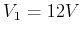
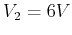
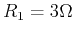
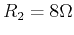
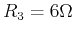
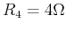
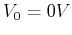
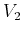
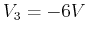

Example 4: (Homework) Find all node voltages with respect to the top-left corner treated as reference node:

, , , , , .
Solution: First assume the bottom node  is reference point, and we
have node voltages (left),  (middle) and  (right). Applying
KCL to , we get